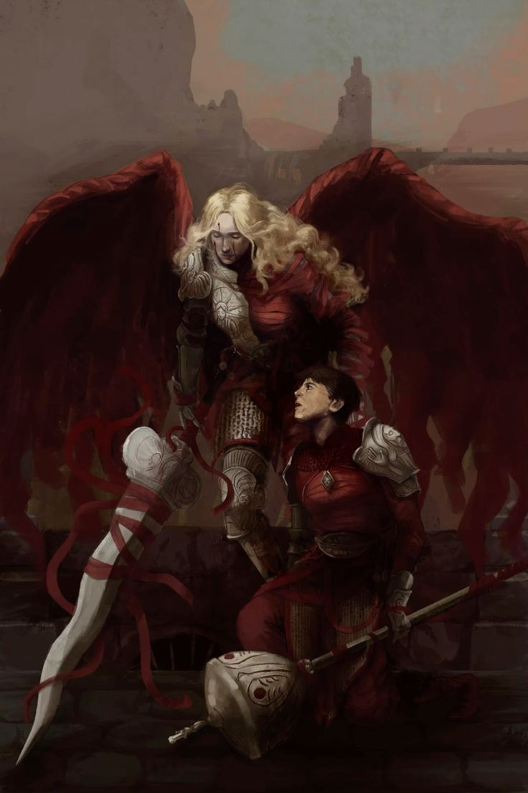

Član Pomazanih Legija, vojne ruke Njegove Svetosti, koji se može vidjeti kako prati glavnog lika tijekom prve polovice igre. Na kraju ga napada na Mostu Tri Kalvarije nakon što su sva Tri Poniženja provedena. Susreće se na polovici igre kao prvi boss ljudskih dimenzija, odlučan da spriječi glavnog lika da dođe do Majke Majki, s raznovrsnim arsenalom napada. Na pola borbe, njegova sestra pridružit će se borbi i pomoći mu.
U suštini je pojačana verzija generičkih vojnika Pomazanih Legija koji se nalaze u kasnijim dijelovima igre, iako ima nekoliko dodatnih napada i podršku Perpetve. Ako ste stekli naklonost njegove sestre, on vas neće napasti i postavit će vas na put prema pravom kraju. On i kasnije pronađeni generički legionari koriste ratni čekić koji podsjeća na aspergilium, liturgijski instrument koji se koristi za posipanje svetom vodom.
Ako Esdras bude pošteđen, susrest ćete Deograciasa koji će izričito opisati njega i njegovu sestru kao "nađene braću i sestre", što znači da su ih roditelji doslovno napustili u nekom trenutku. Bez obzira na ishod, primit ćete "Taranto Mojoj Sestri", ali samo ćete dobiti postignuće "Brat" ako ga ubijete. S druge strane, ako ga ubijete, bit ćete zaključani iz Zlatnog Kraja. Može prizvati munje i pojačati svoje okrete s njima.
S izlaskom ekspanzije 'Rane Večeri', ako pronađete Perpetvinu grobnicu prije nego se suočite s Esdrasom, ona će vas blagosloviti, a Esdras će prepoznati da imate njezinu naklonost kada se susretnete na mostu, postajući vaš saveznik na putu prema pravom kraju umjesto da vas napadne.
Tajanstvena krilata žena s oznakom Pomazanih Legija koja napada Pokajnog na Planinama Besprijekorne Zatamnjenosti. Nema traku zdravlja, ali imate samo jedan pokušaj da je pobijedite! Krunica koju dobijete kada ju pobijedite može se kasnije nabaviti bez borbe, iako njezino rano posjedovanje može pomoći protiv Esdrasa i baca svjetlo na njegovu pozadinsku priču. Jedina druga stvar koju dobijete je postignuće.
Mrtva Od Početka: Ekspanzija Wounds of Eventide otkriva da nije samo stvarno mrtva, već da Perpetva protiv koje se borite nije zapravo prava Perpetva, već manifestacija Čuda koja ima njezino lice i oklop, ali ne i njezin glas. Prema tome kako izgleda njezin koncept, Perpetva se broji. Desna polovica njenog tijela prekrivena je oklopom, dok je lijeva polovica omotana u crveno platno koje većina Pomazanih Legija nosi, slično punom Sarashiju.
Perpetva koju borite u igri je zla kopija, dok prava Perpetva duhovno luta na svom grobu čekajući da je netko sasluša. Kada se glavni lik poveže s njom, ona se otkriva kao protivnica Čuda i Viših Volja, i upućuje ga na pravi put za poraz tih entiteta. Nema traku zdravlja i dijeli glazbenu temu s Esdrasom.
Zlatni Kraj uveden u ekspanziji Wounds of Eventide pokreće se jer ga glavni lik pronađe i oda počast njezinom grobu, omogućujući joj da komunicira s njim u tajnosti, izvan Čudnog oka, i otkriva da ona zna istinu o Višim Voljama i kako ih zaustaviti. Njezine riječi pokreću domino efekt koji vodi kraju vladavine Viših Volja i Čuda, počevši od regrutiranja njezinog brata Esdrasa na stranu glavnog lika kako bi mu pomogao u oslobađanju Mea Culpe i spašavanju Crisante od njenog pranja mozga.
Kada Esdrasova zdravlja nestane, lažna Perpetva ga ubija tako što on eksplodira.
